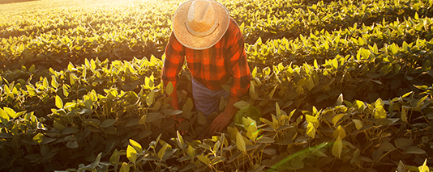
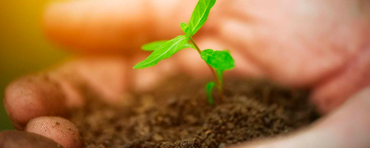

#Sustentabilidad
Pensar en el futuro significa, para nosotros, trabajar hoy de una manera responsable y sostenible.
Estamos convencidos de que nuestro éxito depende de un sólido desempeño económico, social y ambiental, con esta triple creación de valor como clave para la rentabilidad a largo plazo.
Nuestro plan de sustentabilidad se centra en atender cinco objetivos estratégicos:
Proteger los Estándares
Nos esforzamos día a día para equilibrar los objetivos del Grupo con las responsabilidades legales, ambientales y sociales mediante el cumplimiento de las leyes y reglamentos aplicables, la transparencia y productos seguros y de calidad garantizada.
Nuestra Gente
Capacitamos a nuestra gente para que sea el motor de nuestro Grupo, respetando sus derechos, proporcionando un ambiente de trabajo seguro y saludable, atrayendo a las personas adecuadas para los empleos adecuados y ofreciendo a los empleados oportunidades para maximizar su potencial.
Cadena de Valores
Nos esforzamos en crear soluciones responsables e innovadoras para garantizar el suministro mundial de alimentos en el futuro. Y para cumplir este desafío, tenemos que trabajar juntos, aumentando la productividad agrícola a través de la innovación responsable y administrando nuestras cadenas de suministro de una manera eficiente y responsable que nos permite conectar mejor la oferta y la demanda.
Medio Ambiente
Estamos comprometidos a reducir nuestro impacto ambiental de una manera ambientalmente responsable. Nuestros sistemas de gestión ambiental se implementan de acuerdo con estándares internacionalmente reconocidos, como ISO 14001. Monitoreamos anualmente para implementar proyectos energéticamente eficientes para reducir nuestra huella.
Comunidad
Creemos en apoyar y crecer en conjunto con nuestras comunidades vecinas. Lo hacemos mediante la implementación de programas de participación comunitaria basados en las necesidades de cada caso.
Nuestras operaciones diarias generan empleo, impulsan el crecimiento económico e impactanen el sustento de las comunidades locales. Comprender sus necesidades y preocupaciones a través del diálogo es un componente crucial de nuestro compromiso con la sostenibilidad y la actividad a largo plazo de nuestro negocio.
Con la creación de Agricultura Consciente propusimos un programa de Capacitaciones online para que productores y público en general pueda acceder a información de relevancia sobre cómo encarar un plan de producción bajo las Buenas Prácticas Agrícolas:
http://www.agriculturaconsciente.com/
Desde hace diez años, el Concurso “¿Qué Hay de Nuevo en mi Suelo?” acerca a las Escuelas Agrotécnicas de todo el país, un certamen donde los alumnos compiten desarrollando ensayos con diferentes cultivos para aprender en distintas instancias, la importancia de valorar elcuidado del suelo: http://www.qhdn.com.ar/